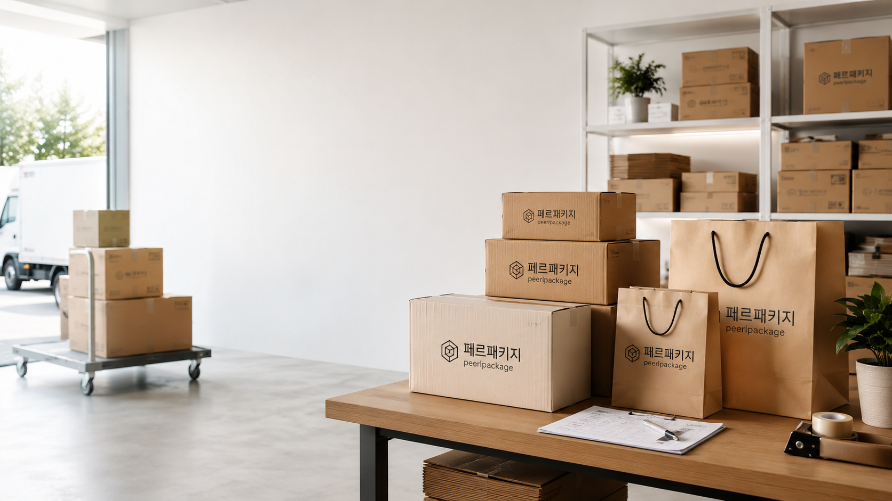
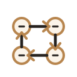
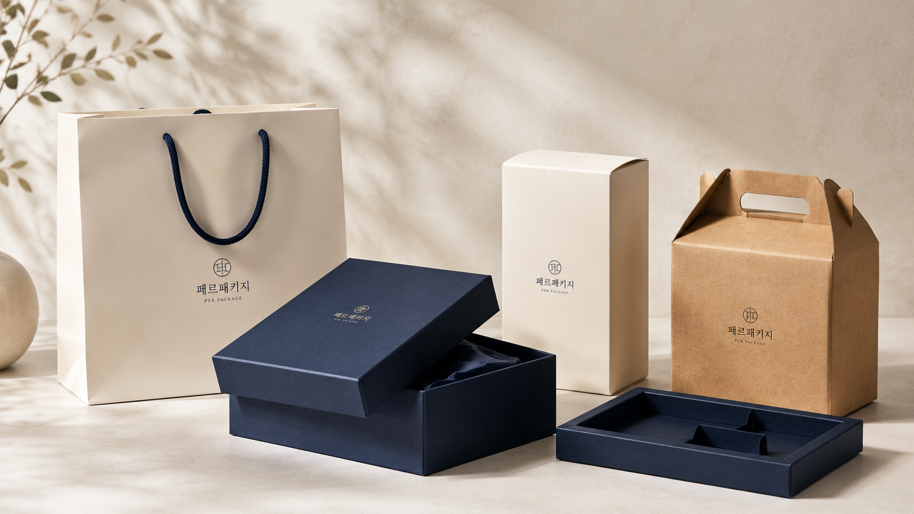

가로, 세로, 높이와 내용물 무게를 기준으로 단박스, 싸바리, 골판지, 쇼핑백 구조를 제안합니다.
ABOUT PERPACKAGE
을지로 패키지 제작 기준
페르패키지는 단박스, 싸바리박스, 쇼핑백, 골판지 패키지와 부자재를 다루는 패키지 제작 파트너입니다. 소량 샘플부터 1,000개 전후 B2B 본제작까지 제품 구조와 일정에 맞춰 상담합니다.
SMALL소량·샘플 상담
행사, 학교 프로젝트, 본제작 전 샘플처럼 작은 수량도 제작 가능성을 먼저 확인합니다.
B2B1,000개 전후 본제작
브랜드 납품용 단박스, 쇼핑백, 싸바리박스 사양을 구조와 일정 기준으로 정리합니다.
EULJIRO제작 현장 연결
인쇄, 후가공, 조립, 납품 조건을 한 흐름으로 맞춰 실제 제작 가능한 방향을 제안합니다.

제작 상담에서 중요하게 보는 기준
패키지는 예쁜 시안만으로 끝나지 않습니다. 제품 크기, 보관 방식, 인쇄, 후가공, 납기와 예산까지 같이 맞아야 실제 납품 가능한 결과가 됩니다.

02수량별 제작 판단소량 샘플, 행사성 제작, 1,000개 전후 본제작의 비용 구조와 제작 가능성을 구분합니다.
브랜드 로고, 색상, 박, 형압, 코팅, 리본 등 실제 제작에 필요한 조건을 함께 확인합니다.

WORK RANGE
기성품 구매와 맞춤제작 상담을 함께 연결합니다
- 대학생, 행사, 샘플 제작 고객을 위한 소량 포장재 상담
- 화장품, 식품, 카페, 전자제품 브랜드를 위한 B2B 패키지 제작
- 을지로 기반의 인쇄, 원단, 후가공, 납품 일정 조율
회사 소개 다음은 제품군을 확인해보세요
단박스, 싸바리박스, 쇼핑백, 골판지 패키지 중 현재 필요한 제작 방향을 먼저 고르면 상담이 빨라집니다.